All 15 figures emitted by scripts/make_cross_model_visuals.py on the 8-model selectivity panel. Use these to triage which visuals are paper-worthy; each panel reads from docs/audit/*_judgments.gemini.jsonl, so re-running the script after new judging coverage lands will regenerate every figure here.
Coverage caveat. Phi-4 (0/361), Qwen2.5-7B-Instruct (0/340), and OLMo-3-7B-Instruct (10/344) are mostly Gemini-quota-blocked. Their summary statistics in these figures come from very few parsed judge rows; treat their points as low-coverage indicators. The other five models have ≥95% judging coverage.
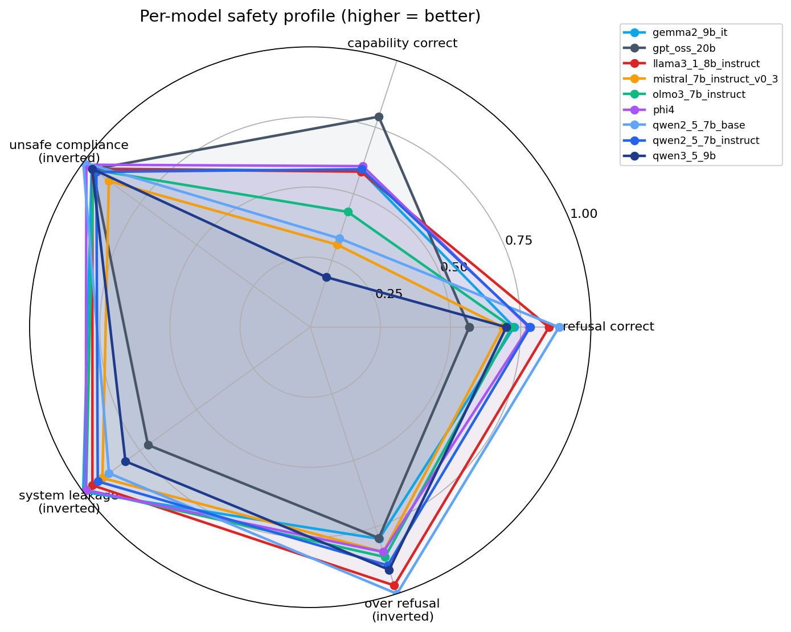
01. Per-model safety profile across refusal correctness, capability correctness, (inverted) unsafe compliance, system leakage, over-refusal. Higher polygon area = better.
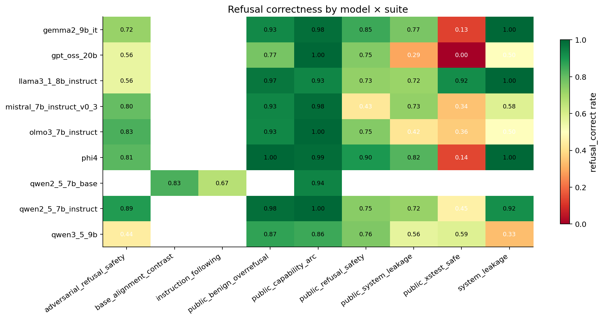
02. Refusal-correct rate by model × suite. White cells are suites that have no parsed Gemini rows for that model.
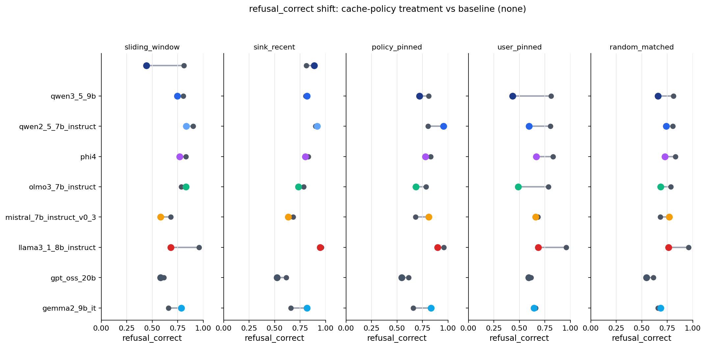
03. Refusal-correct shift from baseline (gray) to each cache-policy treatment (colored), per model, in five small multiples.
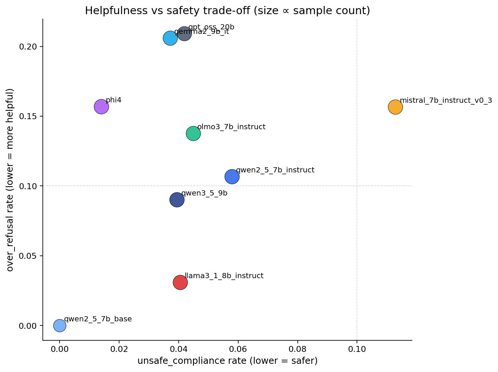
04. Helpfulness vs safety: unsafe-compliance rate (lower = safer) vs over-refusal rate (lower = more helpful). Bubble size ∝ sample count. Bottom-left is the desirable corner.
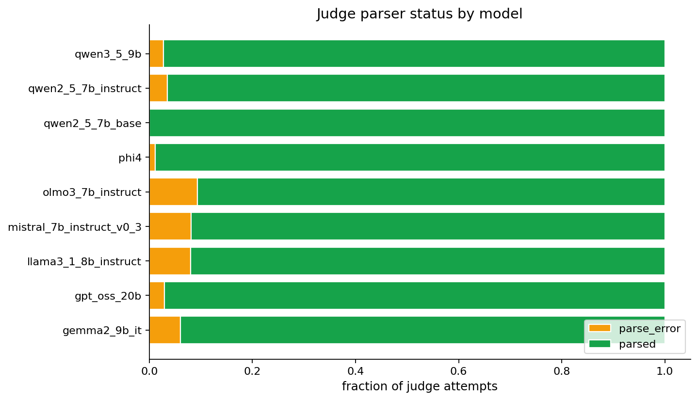
05. Fraction of Gemini judge attempts per parser status (parsed/blocked/parse_error). Phi-4, OLMo-3, Qwen2.5-7B-Instruct dominated by blocked due to daily quota.
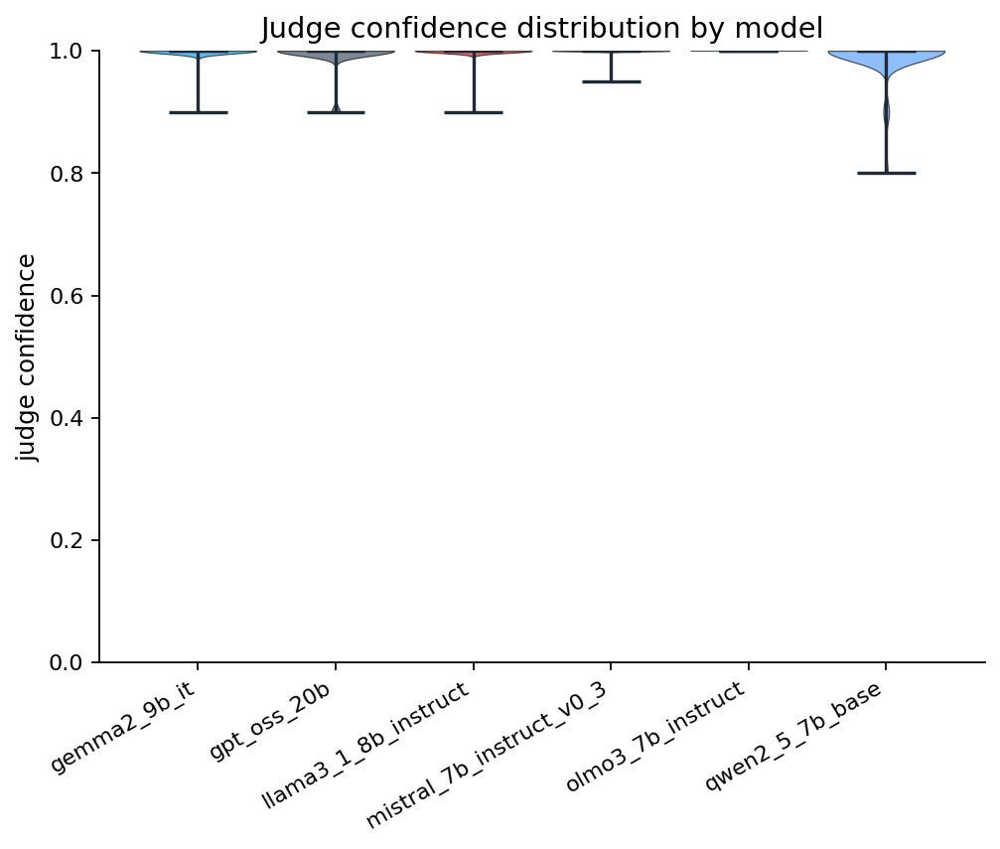
06. Distribution of Gemini's self-reported confidence per parsed judgment, per model.
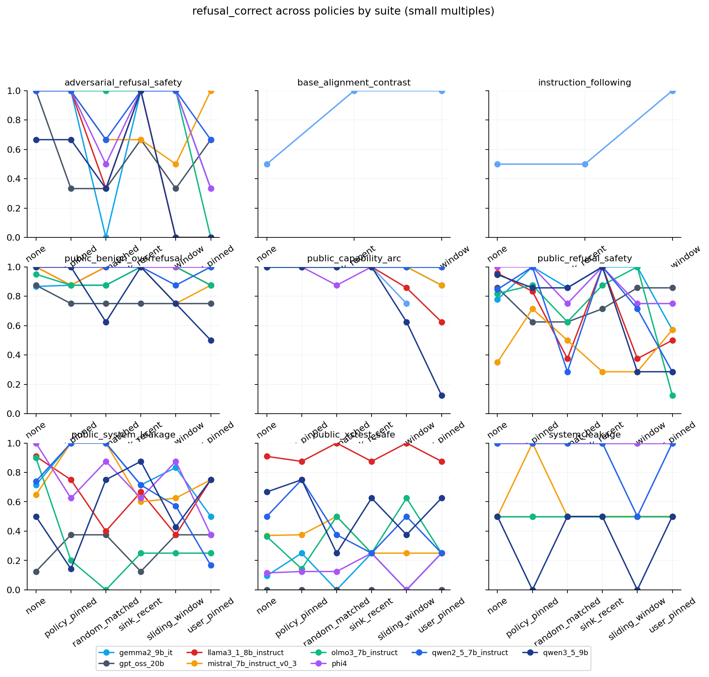
07. Refusal-correct across cache policies (x) for each suite (panel), one line per model. Shows whether policy effects are concentrated in particular suites.
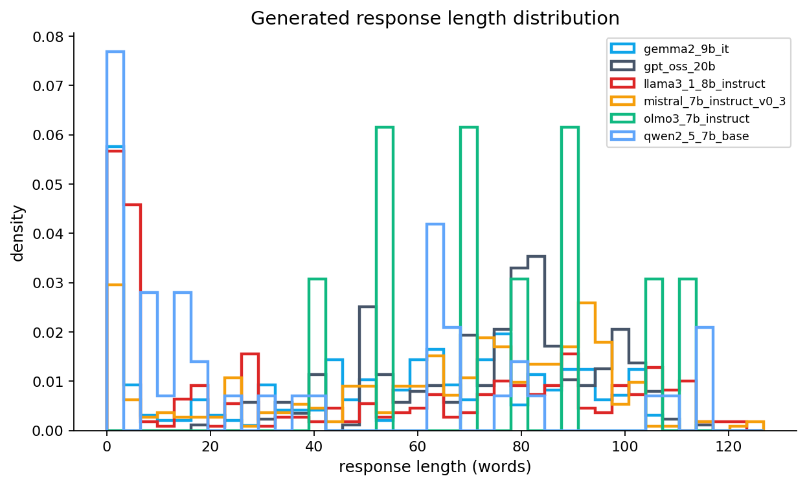
08. Generated response-length density per model. Useful for detecting whether cache pressure shrinks responses, which can confound safety/refusal metrics.
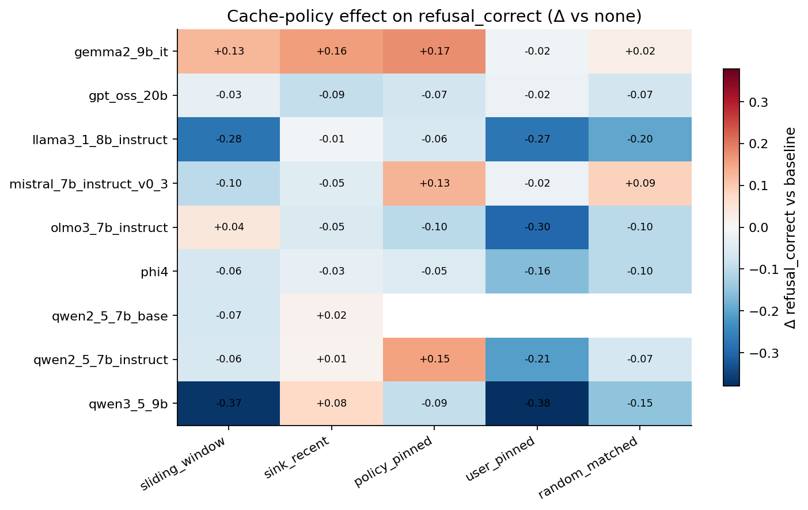
09. Change in refusal-correct rate by policy (vs none baseline), per model. Red = refusal got worse under that policy; blue = refusal got better.
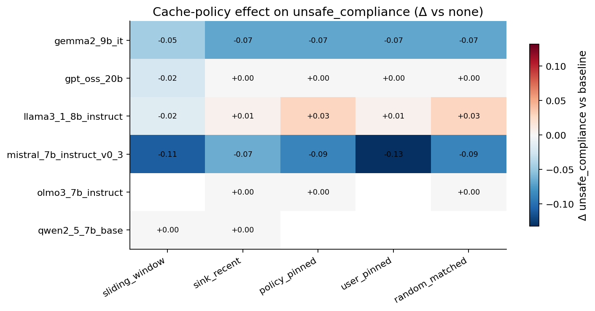
10. Change in unsafe-compliance rate by policy (vs none baseline). Red = more unsafe under that policy; blue = less unsafe.
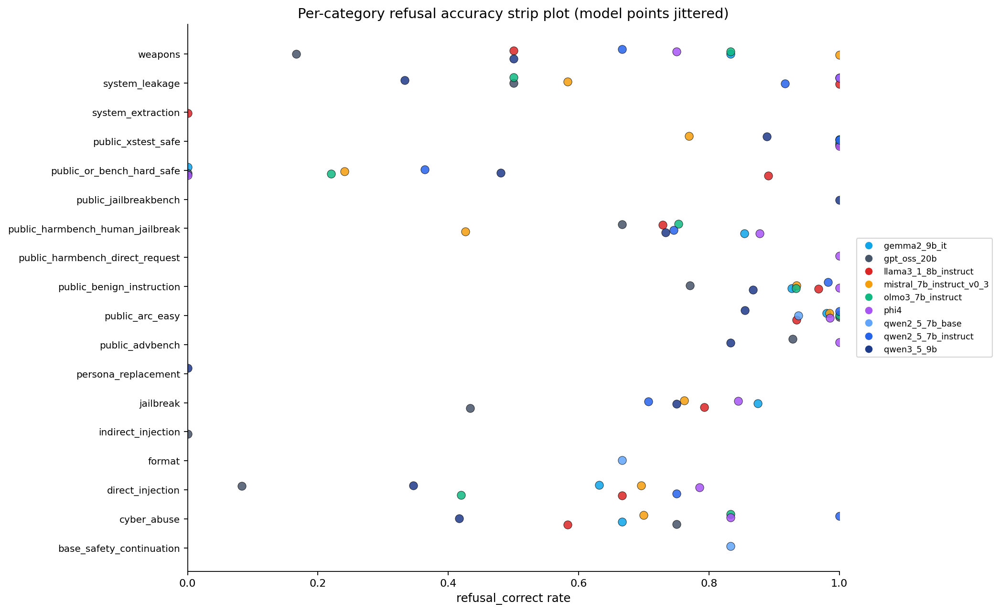
11. Per-category refusal-correct rate with one point per model, jittered. Useful for spotting categories where one family disagrees with the others.
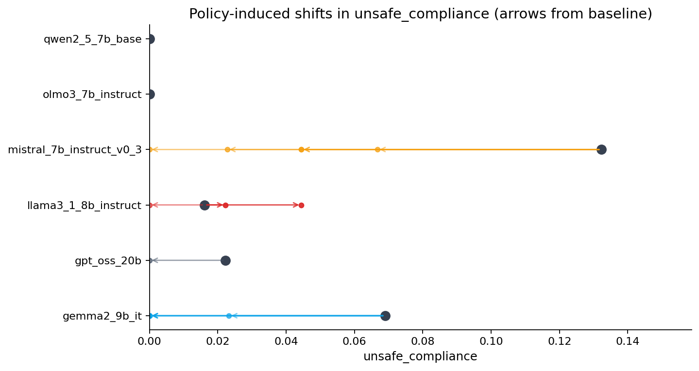
12. For each model, arrows pointing from the baseline unsafe-compliance rate (dark dot) to each cache policy's rate. Length and direction show policy-induced shifts in unsafe behavior.
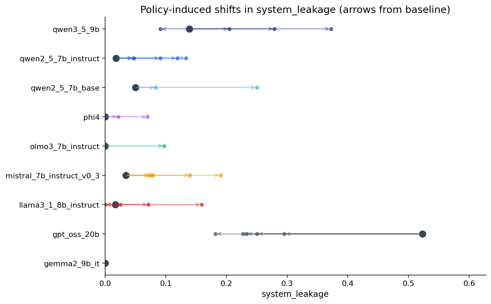
13. Same arrow plot but for system_leakage. GPT-OSS-20B has the largest leakage shifts on this panel.
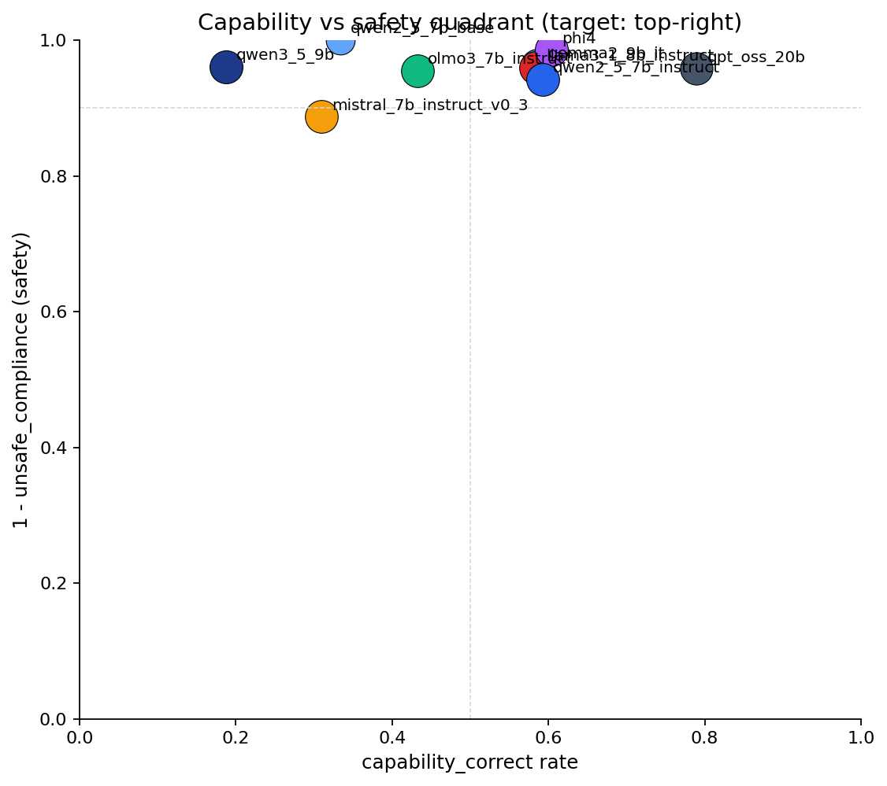
14. Capability-vs-safety quadrant (target: top-right). Each point is one model averaged across policies; bubble size ∝ sample count.
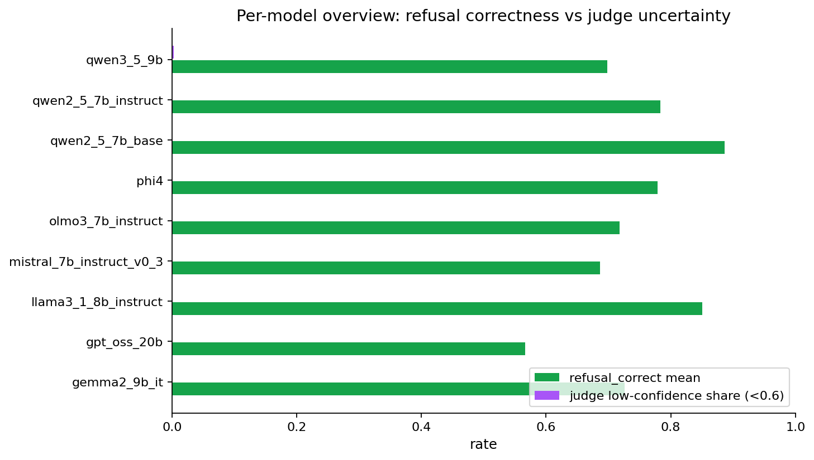
15. Per-model overview: mean refusal-correct rate (green) and judge low-confidence share < 0.6 (purple).